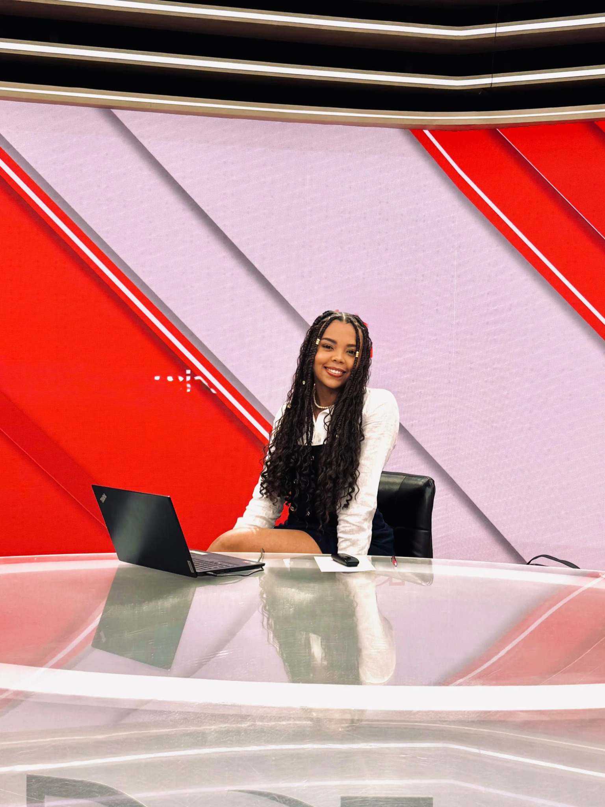

Comunicación Social y Periodismo
Universidad Autónoma de Occidente
Noveno semestre · Hoja de vida, octubre 2026Soy Karina Londoño, periodista en formación, creadora de contenido y apasionada por conectar personas a través de historias auténticas.

Mi trabajo se mueve entre la reportería, la producción audiovisual, las entrevistas y la presentación. Me interesa encontrar el lado humano de cada historia y convertirlo en contenidos claros, cercanos y memorables.
He participado en proyectos periodísticos, culturales y comunitarios, tanto frente a cámara como detrás de ella. También tengo experiencia como maestra de ceremonias, en podcasts y en narrativas sonoras.
Una trayectoria entre medios, cultura, territorio y producción de contenidos.
Universidad Autónoma de Occidente
Noveno semestre · Hoja de vida, octubre 2026Universidad de los Andes
Curso complementarioFormación Learn English
Nivel oral bilingüe · Escrito avanzado (según hoja de vida)Colegio Ciudadela La Presentación
2022Entrevistas, reportajes, reels y producción de contenidos para televisión y plataformas digitales.
2025 — ActualidadPerfiles periodísticos sobre liderazgos, procesos culturales e historias del Pacífico colombiano.
2025 — ActualidadEntrevistas y relatorías que documentan memorias familiares, territorio y vínculos con la tierra.
2026 — ActualidadConducción de un conversatorio público con la escritora Sofía Herrera.
2025Estoy abierta a proyectos de periodismo, presentación, producción audiovisual, contenidos digitales y colaboraciones creativas.
karinalondonob@gmail.com ↗